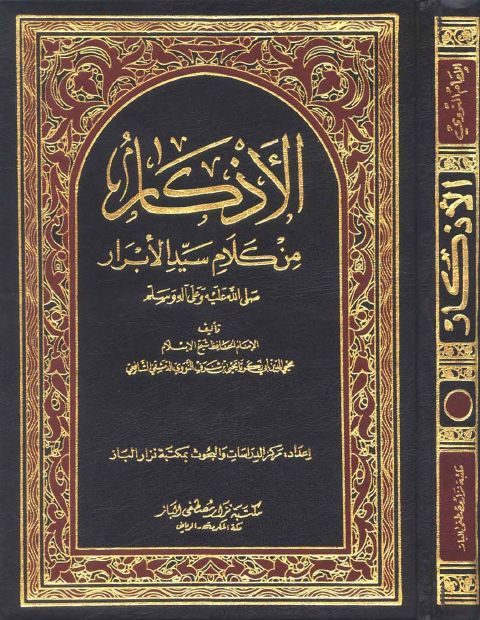
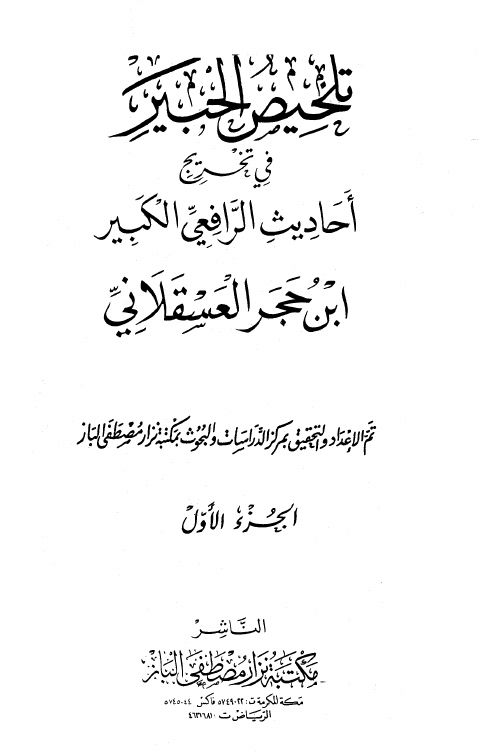
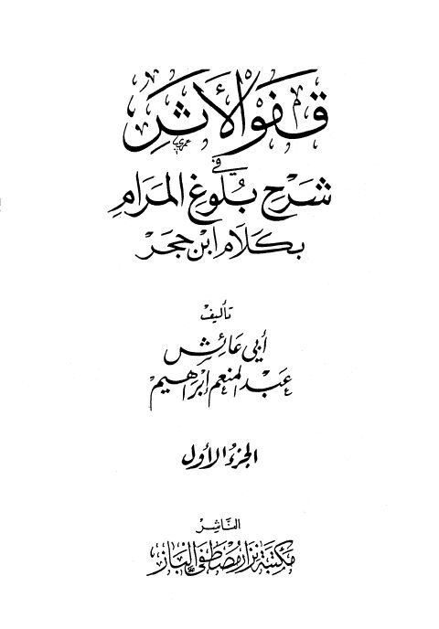
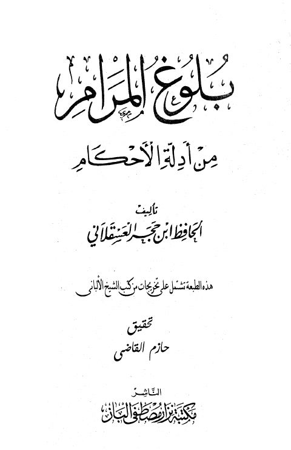

مكتبة نزار مصطفى الباز
Publisher
Resources

الأذكار من كلام سيد الأبرار- ط الباز الأذكار من كلام سيد الأبرار- ط الباز يحيى بن شرف النووي
تلخيص الحبير في تخريج أحاديث الرافعي الكبير- ط. الباز تلخيص الحبير في تخريج أحاديث الرافعي الكبير- ط. الباز أحمد بن علي بن حجر العسقلاني الأذكار من كلام سيد الأبرار ﷺ
الأذكار من كلام سيد الأبرار ﷺ
يحيى بن شرف النووي
الأذكار من كلام سيد الأبرار ﷺ
الأذكار من كلام سيد الأبرار ﷺ
يحيى بن شرف النووي

قفو الأثر في شرح بلوغ المرام بكلام ابن حجر قفو الأثر في شرح بلوغ المرام بكلام ابن حجر أحمد بن علي بن حجر العسقلاني جامع العلوم والحكم في شرح خمسين حديثًا من جوامع الكلم- ت. عبد المنعم إبراهيم
جامع العلوم والحكم في شرح خمسين حديثًا من جوامع الكلم- ت. عبد المنعم إبراهيم
عبد الرحمن البغدادي بن رجب الحنبلي
جامع العلوم والحكم في شرح خمسين حديثًا من جوامع الكلم- ت. عبد المنعم إبراهيم
جامع العلوم والحكم في شرح خمسين حديثًا من جوامع الكلم- ت. عبد المنعم إبراهيم
عبد الرحمن البغدادي بن رجب الحنبلي

بلوغ المرام من أدلة الأحكام مع تخريجات من كتب الشيخ الألباني- ت. حازم القاضي بلوغ المرام من أدلة الأحكام مع تخريجات من كتب الشيخ الألباني- ت. حازم القاضي أحمد بن علي بن حجر العسقلاني